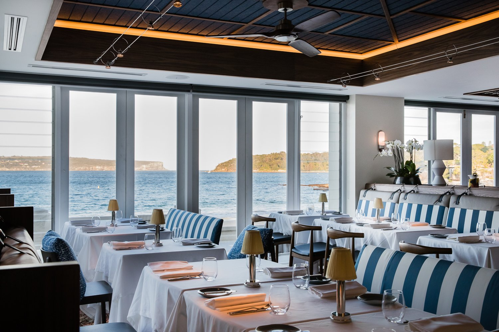
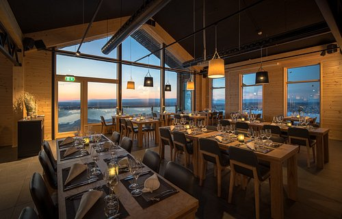
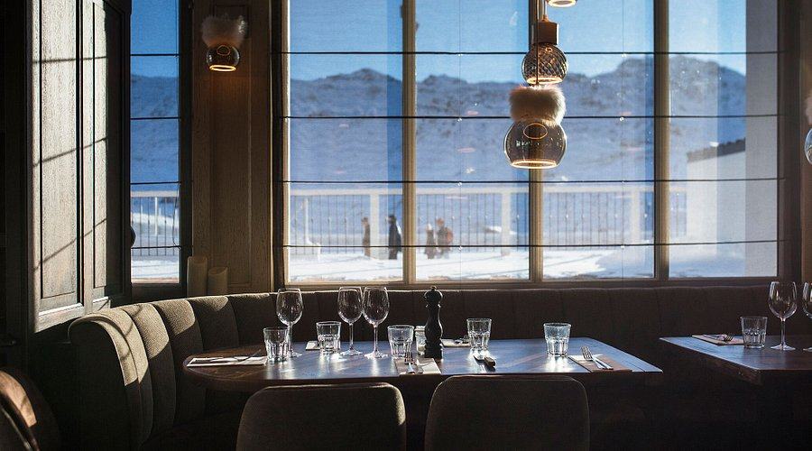

Bem-vindo ao Kai Moana House
Frutos do mar frescos, receitas especiais e sabores do oceano que conquistam na primeira garfada. Um pedacinho da Nova Zelândia esperando por você no Kai Moana House.


Nosso Restaurante
O Kai Moana House é um restaurante inspirado nos sabores do oceano e na cultura do Pacífico, trazendo pratos frescos de frutos do mar e uma experiência única para os visitantes. O nome “Kai Moana”, da língua maori, significa comida do mar, representando nossa especialidade em receitas preparadas com ingredientes selecionados. Além da gastronomia, o restaurante oferece um ambiente temático inspirado na aventura de Moana, com decoração oceânica, música temática e espaços para fotos. No Kai Moana House, cada visita é uma experiência que une sabor, cultura e diversão. 🌊🍽️✨



